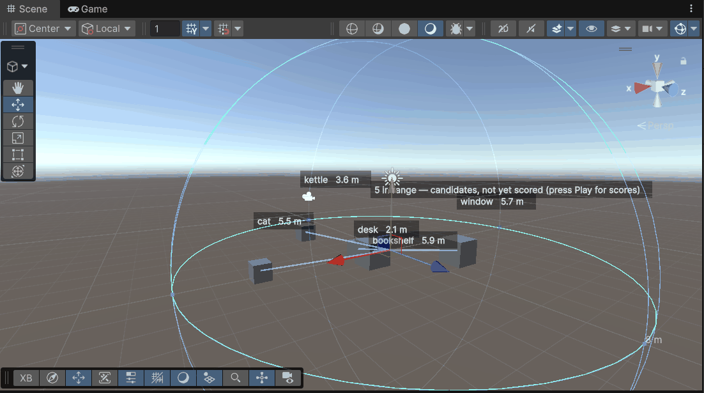

Points of interest
Make an object noticeable: add AI Point Of Interest to it. That is the whole setup.

Select a character and the radius is a handle you can drag. Everything inside it is a candidate; what reaches the prompt is the most salient handful — distance, priority, facing and recent interaction weighed together — recomputed a few times a second, and once more by your dialogue code just before each turn.
The scene view answers two different questions depending on whether the game is running:
- Not running — every point of interest inside the radius, named, with its distance. These are candidates and they are deliberately not scored: distance is knowable while you are placing furniture, line of sight and priority are not, and a number invented in edit mode would be a guess wearing the clothes of a measurement.
- Playing — the objects actually in context, each with the score that put it there, the line thicker for the ones in view. This is the answer to "why is the character talking about the bookshelf and not the bed".
There is no list to register it in, no manager to tell. The component adds itself to a static registry while it is enabled and removes itself when it is disabled or destroyed, so object pooling, additive scene loads and scene unloads are already correct.
The object
| Field | What it does |
|---|---|
id | What the model writes to name it. Short, unique, obvious. Derived from the object name if left empty. |
description | What it is, per language. |
priority | Higher is more worth mentioning. 0 is ordinary scenery. |
aimPoint | Where to look at and measure from. Empty uses the centre of the object's renderers, which is what a person would point at. |
affordances | Verb ids this object accepts; any other verb aimed at it fails validation and gets the repair round. Empty means all of them. |
states | Authored states selected at runtime: poi.SetState("open"). |
On Npc Interact | UnityEvent raised when an NPC acts on it — inspector wiring, no code. |
Ids matter more than they look. The model picks a target by writing its id, so two objects called chair means it cannot reliably mean either. Over-long and unusable ids are warned about in the inspector; duplicates are reported by the inspector, which sees the whole scene at once, and at runtime by PoiRegistry.DuplicateIds(). A name the grammar cannot hold — «Кружка», 「マグカップ」 — still gets a stable id (poi_ plus a short hash), so an object never silently fails to register.
Long derived names are shortened to the 48-character grammar limit with a stable hash suffix; existing valid authored ids keep their spelling. Each recompute refreshes changed scores, distances and order without raising Changed for a mere rank change. Replacing a pooled instance under the same id updates the live target and raises that event. Context rendering also excludes an object disabled since the last snapshot.
A point of interest is also an action target. It implements IActionTarget and IAimTarget, so a verb can be aimed at it without adding an Action Target component as well — see Actions. The reverse does not hold: an Action Target is addressable but not automatically included in the perception context. It can be offered as an action target; this does not prevent the model from mentioning it in ordinary prose.
The character
Add Perception Query to the NPC.
score = w·proximity + w·priority + w·facing + w·recency-of-interaction
Weights are serialized data. Two rules are not negotiable:
- Occlusion excludes. Something behind a wall is not low-scoring, it is absent. A character remarking on an object it cannot see reads as broken no matter how the weights are tuned. Occlusion is checked only against the Occluders layer mask, which is empty by default — set it to your walls and furniture, and the inspector reminds you until you do.
- Only the top N reach the prompt (default 6, hard cap 15). Small models degrade quickly once a prompt turns into a list, so this is a quality control. The second limit is the token budget of
DescribeContext(100 by default): when the description does not fit, the block is cut and says so.
Facing is soft by contrast — something behind the character is less salient, not invisible, because a head can turn.
How it reaches the model
The result of one recompute produces two things at once:
Nearby: a mug of cocoa (still warm) [mug], the record player (playing) [record_player].
…and the target enum of the action grammar, built from that same list. When this grammar is successfully applied, a valid completed action's action.target is restricted to the rendered shortlist. Free-form prose is not restricted to those objects: perception supplies context, not a guarantee against invented scenery. This is one turn's captured view; objects can move, be disabled or be replaced afterwards, so execution still needs current target and gameplay checks.
The block rides with the turn and is never written to the conversation transcript: it describes one moment, and a transcript would repeat it later as though it were still true.
Your dialogue code makes the hand-over. Just before generating:
perception.Recompute(); // the view of this moment string nearby = perception.DescribeContext(languageCode); // "Nearby: a mug of cocoa [mug], …" string turnText = nearby + "\n" + playerLine; // the user message, not the system prompt var turn = new ActionTurn(perception.Schema, dispatcher, sink, npcId, languageCode);
The system prompt is what the inference engine caches, so a block that changes every turn belongs with the player's line. perception.Schema is the action schema whose targets are exactly the ids that block named; the rest of the turn is in Actions. The Hello NPC sample does not read perception; the World Aware sample shows the block and the schema without a model.
When there is more than fits. The query keeps the top entries by salience and closes the list with a per-language tail — …, a lamp [lamp], and other things. — so the model knows the list was cut rather than believing the room holds four objects. The snapshot says the same in code: Omitted is how many were dropped, IsTruncated whether any were. With nothing in range the block is one short sentence (Nothing notable nearby.) rather than an empty header. DescribeContext(languageCode, header, maxTokens) is the call that renders it; the header is optional and the token budget is where the cut happens.
Receiving an interaction
public class Kettle : MonoBehaviour
{
public void OnNpcInteract(NpcActionContext ctx) // wired on the POI in the inspector — UnityEvent lists public methods only
{
Debug.Log($"{ctx.SpeakerId} did {ctx.Verb} to {ctx.Poi.Id}");
}
}If the object vanished between generation and dispatch, nothing is raised and nothing throws.
The mechanism underneath is IActionReceiver: the action dispatcher delivers every action to the character's handlers, and a target that implements the interface also receives the actions aimed at it. AIPointOfInterest implements it by raising the inspector event above, so "when the character opens this door, play the animation" lives on the door.
Making a whole scene visible
PoiBulkAttach.AttachToLayer("Props"); // or AttachToTag("Interactable")Idempotent. Ids are de-duplicated against the live registry and within the call. AttachToLayer includes inactive objects unless you pass includeInactive: false; AttachToTag sees only active ones — that is how tag lookup works in Unity — so call it after the scene has settled.
Debugging
- Select the NPC: the perception radius and lines to everything currently in context.
perception.Explain(poi)answers "why did the character not mention the mug?" with the actual reason — too far, behind which object, or simply outranked.
Snapshot identity and registry callbacks
An item captures its id when created. Initialize on a live point of interest does not change ids in a snapshot you already hold; the next query recompute can detect the new identity and raise Changed. The snapshot copies the supplied array and exposes its items through a read-only list. Poi itself remains a live reference: transforms, descriptions and enabled state are not frozen. Context rendering excludes a reference whose live id or registry entry no longer matches the captured id until it is recomputed.
If a registry observer initializes or enables/disables that object inside a notification, the newest intent owns its registration. An older callback unwinding cannot restore an obsolete identity or remove the newer registration. Existing public initialization and registry methods retain their signatures. Check actual pooling and scene transitions in your target player before release.